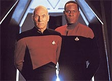
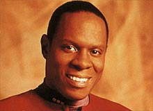
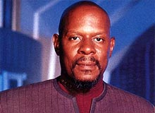
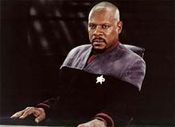

|
Ben
Sisko: Pai, Emissrio, Soldado
Quando
se fala de um dos capites de Jornada (no caso do presente
artigo, do capito Sisko) raro no vir imediatamente a mente
uma imediata comparao com os outros protagonistas do legado de
Roddenberry. Aqui no diferente.
Kirk e Picard so baseados nos dois esteretipos bsicos do heri,
o primeiro no do heri romntico, infinitamente apaixonante e
apaixonado, e o segundo naquele da figura estica, absolutamente
inabalvel em sua tica, auto-controle e fora de vontade.
Vendendo os personagens desta forma para os roteiristas e para o pblico,
fica garantido um rpido entendimento sobre os mesmos para todos
os envolvidos, formando uma base slida onde pudessem ser construdas
caractersticas adicionais e tornar os personagens algo nico,
capazes de transcender os esteretipos dos quais so derivados.
Mas no me entendam mal, tal "transcendncia" envolve
um grande esforo criativo, pois baseando um personagem em esteretipo
o perigo de se atingir uma caracterizao caricatural muito
grande, da os grandes mritos pela criao e desenvolvimentos
dos grandes personagens, Kirk e Picard.
 Kirk
cruzou um longo caminho desde aquele heri at certo ponto ingnuo,
sempre com um truque na manga, quase sempre uma nova verso do
infame, "Ei, olha, o seu cordo est desamarrado", at
a sua melhor caracterizao nos filmes para o cinema
(fundamentais para o desenvolvimento dos personagens da Srie
Clssica)
em que teve de enfrentar a sua prpria mortalidade e a
perspectiva de se tornar obsoleto. J Picard teve tambm que
deixar a excessiva rigidez das primeiras temporadas da Nova
Gerao,
rumando para uma caracterizao mais relaxada e mais bem
humorada, j prximo ao final da srie. Pensando assim, parece
que eles, de certa forma, caminharam na direo, um do outro.
Tanto Kirk quanto Picard so ambos fruto de extremas idealizaes,
idealizaes aparentemente presentes no prprio inconsciente
coletivo desde tempos remotos, idealizaes to similares, dspares
e complementares quanto as proverbiais "duas faces da mesma
moeda". Esta dualidade Kirk x Picard talvez tenha polarizado
os fs de Jornada mais do que qualquer outro assunto neste
gigantesco franchise de quase 35 anos de existncia. Uma observao
interessante que quando um "seguidor" de uma destas
correntes ("Pr-Kirk" ou "Pr-Picard") se
manifesta contrrio ao "adversrio", ele o faz
normalmente atacando (de forma deturpada e exagerada na maioria
das vezes) o esteretipo de heri do qual o seu respectivo
"desafeto" derivado.
Em uma opinio bastante pessoal, considero tanto Kirk quanto
Picard duas abordagens absolutamente vlidas do mito do heri.
Ambos so grandes personagens com qualidades admirveis, como
devem ser de fato, os heris. Durante muito tempo, favoreci o
modelo de heri associado a Picard, mas descobri mais tarde que
ambos so essencialmente equivalentes, com um tempo
suficientemente longo vou acabar gostando de uma forma
absolutamente igual dos dois personagens, o diferencial que eu
vejo que vai se manter vai ser o dos atores.
Ainda que eu no enaltea o trabalho de Stewart como j o fiz
um dia (parece que a cada episdio que revejo, sinto de forma
cada vez mais artificial e exagerada tanto a sua impostao de
voz quanto o seu sotaque britnico), ele essencialmente nasceu
para trazer vida personagens como Picard --isto no h como
negar.
Quanto ao velho Bill bem... no me entendam mal, eu me divirto
vendo o Shatner "espanar o cenrio", tanto quanto
qualquer um, mas realmente a sua leitura com tantas (e mal postas)
pausas, muitas vezes chega a atingir o nvel de comdia involuntria.
Ainda que isso me incomode menos do que a outros, gosto realmente
de certas atuaes de Shatner. Mas ele definitivamente no
para Kirk o que Stewart para Picard.
 Nas
duas sries seguintes foi decidido que os protagonistas seriam,
em algum sentido "menos idealizados", "mais
falhos", "mais prximos de suas respectivas tripulaes",
"dotados de caractersticas nicas em relao aos seus
predecessores" etc. Se isso foi uma atitude consciente para
levar o franchise em uma outra direo ou se foi simplesmente
algo do tipo "Ei, o que no fizemos ainda que vamos fazer
agora?", nunca saberemos. O que certo que Sisko e
Janeway (por incrvel que possa parecer) partilham (a menos ao nvel
da bblia das suas respetivas sries) de tais preocupaes em
suas caracterizaes.
Sobre Janeway eu s sinto indiferena. A primeira palavra que
chega ao pensamento quando penso na capit da Voyager
esquizofrenia. Sete temporadas, 174 episdios e eu eu continuo
sem ter a menor idia do que ela pode vir a fazer em situaes
de crise, tantas foram as vezes que os roteiristas modificaram e
re-modificaram a caracterizao da personagem para fazer as mais
estapafrdias histrias funcionarem em seus termos.
Alguns elementos extremamente irritantes da sua caracterizao:
sua infinita capacidade de citar e se apegar a regulamentos e
protocolos como se estivesse servindo na prpria Academia da
Frota Estelar (e no em uma nave perdida do outro lado da galxia);
a sua forma de lidar com a solido do comando --infelizmente
Janeway parece buscar esta solido, ela parece buscar este fardo
e mostrar pra todo mundo que tem a tarefa de levar a sua tripulao
pra casa e est "sozinha" pra realiz-la.
Especialmente frustrante a forma que ela destila amargura, para
quem quiser ouvir, sobre o seu assumido "fardo" (eu tambm
no compro por um segundo essa noo de que ela no pode se
permitir ter um relacionamento afetivo com um membro de sua
tripulao. Mas que besteira, pelo amor de Deus!); ter tomado inmeras
decises (no mnimo discutveis) que afetaram muitas vezes as
vidas de raas inteiras (isto por si s j um problema,
especialmente se levarmos em conta a total falta de atitude da
tripulao de Voyager perante os desmandos de sua capit, falta
de atitude principalmente do seu comatoso primeiro-oficial
Chakotay); seus inflamados (e irritantes) discursos sobre tica e
moral em que muitas vezes ela desconsidera completamente (e
descaradamente) os seus prprios erros (muitas vezes recentes) em
um festival de hipocrisia galopante etc.
Se tiver que escolher um capito favorito, Janeway (com a qual no
consigo me identificar em momento algum ao longo da srie) nem
entra na relao. Simplesmente um pesonagem MUITO fraco.
Pensando em episdios como "11:59" e
"Workforce", em que Mulgrew interpreta outros
personagens (e se saindo bem na empreitada), fica a certeza que o
problema a Janeway e no a atriz que a interpreta.
Como todos j devem ter descoberto meu capito favorito na histria
de Jornada nas Estrelas, claro, Ben Sisko (apesar de que o
mais correto seria dizer: "o meu personagem favorito dentre
aqueles que so capites, Ben Sisko"). O motivo por que
prefiro Sisko acima de Picard e de Kirk (bem elogiados acima)
simplesmente identificao. Eu me sinto mais prximo ao
personagem de Ben Sisko do que ao de qualquer outro dentre os
capites de Jornada.
No que se segue temos um pequeno histrico do desenvolvimento do
personagem ao longo da srie e suas principais facetas de pai,
Emissrio e capito (ainda que inicialmente ele fosse um
comandante) propriamente dito. O estilo breve, tentando
fornecer simplesmente uma descrio leve e bsica e no a ltima
palavra sobre o assunto.
Entendendo o desenvolvimento de Ben Sisko:
"Emissary" nos deu um grande salto de caracterizao
para Sisko, mostrando todo o seu amor por Jeniffer. Porm, em
todo o restante da primeira temporada pouco foi feito com o
personagem. Sua boa presena em "In the Hands of the
Prophets" foi um bom ponto, mas no suficiente. Suas cenas com
Jake sempre funcionaram desde o incio mas o seu relacionamento
com Dax demorou um pouco a engrenar, em parte devido aos problemas
de caracterizao de Jadzia, o mais problemtico dos
personagens num momento inicial.
Veio a segunda temporada e Brooks trouxe melhores atuaes para
o personagem, ainda em um estilo extremamente contido e distante,
profissionalmente falando. Havia a falta de um interesse amoroso
("Second Sight" foi uma catastrfica tentativa em
colocar algum na vida de Ben Sisko). No havia tambm um
cuidado especial em colocar Sisko no centro da srie. No me
entendam mal, no necessrio coloc-lo como destaque em cada
episdio, mas quando us-lo em um episdio, que o faam sempre
de forma a fortalecer a sua posio e no em coisas destestveis
como "Profit and Loss".
Felizmente as cenas com Jake continuaram a funcionar e as com
Jadzia comearam a funcionar de verdade tambm (fruto tambm do
melhor trabalho com a personagem Dax). Porm, ainda no era
claro se Sisko havia aceito a estao como o seu lar, ou ainda
pensava neste como um posto temporrio. Tambm o personagem
ainda falava muito pouco sobre si, sobre o que ele realmente
pensava.
Um episdio chave (no sentido de se entender melhor o que poderia
ser feito com o personagem) para o futuro de Sisko foi
"Paradise". Nele os produtores descobriram que colocar
Sisko/Brooks em uma posio extrema e adversa era meio caminho
para o sucesso. Finalmente, em "The Maquis" descobrimos
um pouco mais sobre do que feito o personagem em seu melhor
momento at ento na srie. Tambm neste episdio se originam
os seus famosos discursos que passariam a ser uma marca registrada
do personagem e tambm se originam as famosas "espanaes
de cenrio" de Brooks. Seguindo em "Crossover",
apesar de Brooks interpretar a verso alternativa de Ben Sisko,
temos a sua melhor atuao at ali na srie, e aqui os
produtores descobrem que Sisko pode muito bem ter algo de
"perigoso", "implacvel", e ainda assim ser
um grande heri.
Ainda que o personagem tenha momentos importantes na segunda
temporada (como o leitor deve provavelmente estar acompanhando no
guia de episdios das srie), como a introduo de uma bola de
beisebol como o seu smbolo maior, foi na temporada seguinte em
que Ben Sisko veio totalmente vida.
Sem dvida a "temporada da virada" para Sisko foi a
terceira, em que:
- ele recebe uma nave, a Defiant, uma que ele ajudou a projetar e
construir, fazendo-o conhecer a sua nave como nenhum outro capito
em Jornada jamais conheceu a prpria, como visto em "The
Search, Part I".
- tambm recebe de presente mais um episdio Maquis com a
participao de Dukat, em "Defiant".
- tivemos o seu grande momento no episdio duplo "Past
Tense, Part I" (clssico) e "Past Tense, Part II"
(bom), em que Sisko assume o lugar da figura histrica de Gabriel
Bell em um momento absolutamente crucial da Terra no sculo 21.
- tivemos tambm um excelente retorno de foco ao seu papel de
Emissrio em "Destiny", algo raramente lembrado aps o
piloto da srie at ento.
- podemos tambm conferir os talentos de Sisko em improvisao
e seduo (ele se envolve com as verses alternativas de Kira,
Dax e Jeniffer no curso do episdio), quando ele se passa pela
sua falecida verso alternativa e tenta salvar a verso
altenativa de sua falecida esposa Jeniffer, em mais uma visita de
DS9 ao "Universo do Espelho", em "Through the
Looking Glass".
- temos tambm Sisko desobedecendo uma ordem direta de um
almirante e indo ao resgate de Garak e Odo em meio a um infernal
massacre imposto pelas foras do Dominion a uma frota combinada
da Tal Shiar Romulana e da Ordem Obsidiana Cardassiana, no lendrio
episdio "The Die Is Cast".
- em "Explorers", Sisko constri uma verso de uma
antiga nave solar Bajoriana, refazendo com seu filho Jake a fantstica
viagem dos antigos Bajorianos.
- aprendemos tambm que ele sabe cozinhar (e bem), tem um grande
conhecimento de Histria, tem uma grande conscincia social e
respeito por outras culturas, especialmente a Bajoriana, e que ele
finalmente aceitou esta "monstruosidade cardassiana chamada
Deep Space Nine" como o seu lar e arrumou uma namorada, a
capito de cargueiro Kasidy Yates.
(Mais tarde na srie, em "Favor the Bold", da sexta
temporada, Sisko abraa Bajor como o seu verdadeiro lar, chegando
a comprar, mais tarde, em "Penumbra", da stima
temporada, um terreno para construir uma casa onde ele passaria o
resto da sua vida, sonho que ele no pde realizar ao final da srie.)
- ao seu final ele promovido a capito em "The
Adversary".
Elementos que beneficiaram Ben Sisko ao longo da srie:
Jake Sisko (filho), Joseph Sisko (pai), Kasidy Yates (namorada que
depois se tornou sua segunda esposa, terminando a srie grvida
do seu segundo filho, de sexo descohecido), Dax (Curzon, Jadzia e
Ezri), os Bajorianos, seu papel como Emisssrio dos Profetas, os
Maquis, Dukat, Eddington, as escaramuas iniciais e depois a
guerra declarada com o Dominion.
Introduo da Defiant (no momento certo) no primeiro episdio
da terceira temporada, o excelente "The Search, Part I".
Sua promoo a capito (no momento certo) no ltimo episdio
da terceira temporada, o excelente "The Adversary".
Sua mudana de visual, para careca com cavanhaque, no episdio
duplo que abre a quarta temporada da srie, o excelente "The
Way of the Warrior". Sem dvida o personagem e o ator teriam
se beneficiado (e a audincia mais ainda no processo) se este
visual tivesse sido adotado desde o episdio piloto.
Melhores episdios de Ben Sisko como pai e homem de famlia:
A relao entre Ben e Jake talvez seja a mais bonita e
verdadeira dentre todas as da histria de Jornada, suas cenas
sempre funcionaram, especialmente as dos episdios:
"Explores" (bom episdio da terceira temporada em que
Ben e Jake navegam em uma antiga nave solar Bajoriana), "The
Visitor" (clssico episdio da quarta temporada,
provavelmente o segmento mais emocionante da histria de Jornada,
que imortaliza o amor entre os dois), "Nor the Battle to
the
Strong" (clssico episdio da quinta temporada em que Jake
tem de lidar com os horrores da guerra, entender sua experincia
e escrever sobre o ocorrido) e "In the Cards" (clssico
episdio da quinta temporada, provavelmente a melhor comdia da
histria de Jornada, em que Jake faz de tudo para dar a seu pai
um raro card de um jogador de beisebol dos anos cinquenta).
Foi Jake que apresentou Ben a Kasidy Yates (no pssimo
"Family Business", da terceira temporada, sendo o elo
inicial entre os dois o beisebol). Tal relao cresceu e passou
por problemas, como quando Yates foi presa por sua associao
com os Maquis, em "For the Cause", da quarta temporada,
at chegar a um casamento e uma gravidez, como visto na stima
temporada em "Till Death Do Us Part" e "Dogs
of
War" respectivamente.
O relacionamento de Ben Sisko com seu pai pode ser conferido em:
"Homefront"/"Paradise Lost", da quarta
temporada, "A Time to Stand", da sexta, "Far Beyond
the Stars", tambm da sexta, e "Image in the
Sand"/"Shadows and Symbols", da stima.
Dax, o seu melhor amigo por trs vidas, com tantas cenas memorveis,
o "meu velho", sempre diferente mas sempre o mesmo.
Melhores episdios de Ben Sisko como Emissrio:
- o excelente episdio duplo, o melhor piloto da histria de Jornada,
"Emissary", que coloca a srie em movimento e
Sisko no seu lugar na mitologia Bajoriana.
- o excelente episdio da terceira temporada,
"Destiny", que discute profecias e suas interpretaes
de forma extremamente inteligente.
- o excelente episdio da quarta temporada, "Acession",
em que Sisko finalmente aceita o seu papel como Emissrio dos
profetas quando confrontado com um outro possvel Emissrio (um
poeta Bajoriano, vindo do passado).
- o (INFINITAMENTE) clssico episdio "Rapture", da
quinta temporada, quando Sisko encontra uma lendria cidade em
Bajor e comea a receber vises diretamente dos Profetas que o
alertam (entre outras coisas) sobre a guerra que se aproxima.
- o excelente episdio "Sacrifice of Angels", da sexta
temporada, em que os Profetas impedem a vinda dos reforos do
Dominion do quadrante Gama, literalmente salvando todo o quadrante
Alfa. Eles avisam Sisko que a vida dele vai seguir um outro
caminho, que um preo deve ser pago pela interveno deles.
- ainda na sexta temporada temos o excelente episdio
"Waltz", considerado por muitos o pice do personagem
Dukat. Neste episdio Sisko diz que, custe o que custar, no ir
permitir que o Cardassiano faa mal a Bajor novamente.
- o MGICO episdio da sexta temporada "Far Beyond the
Stars", em que quando a fora de vontade de Sisko comea a
falhar pelo quadro de destruio trazido pela guerra, os
Profetas lhe enviam uma viso dos anos cinquenta em que ele um
escritor de fico cientfica negro que, imaginem, escreve um
livro sobre uma estao chamada Deep Space Nine.
- o bom episdio da sexta temporada "The Reckoning", em
que Sisko tem que oferecer a vida de Jake para os Profetas, para
que se cumpra uma antiga e fundamental profecia.
- a trilogia que encerra a sexta temporada e abre a stima com
"Tears of the Prophets" (excelente, onde Ben recebe a
medalha Cristopher Pike por atos de bravura), "Image in the
Sand" (bom) e "Shadows and Symbols" (clssico),
onde Jadzia Dax morre, os Profetas desaparecem e Sisko finalmente
descobre a real natureza de sua existncia.
- ainda na stima temporada temos o bom episdio
"Covenant", em que Dukat pela primeira vez se apresenta
com um fiel seguidor dos Pagh-Wraiths, os adversrios milenares
dos Profetas.
 -
e finalmente no podemos esquecer de mencionar o arco de dez episdios
(o chamado "captulo final") que encerra a srie e que
ao seu final leva Sisko a sofrer uma espcie de tranformao e
agora existir junto com os Profetas no templo celestial. Os episdios
so: "Penumbra" (bom), "Till Death Do Us
Part" (excelente), "Strange Bedfellows"
(excelente), "The Changing Face of Evil" (clssico),
"When it Rains" (bom), "Tacking into the Wind"
(clssico), "Extreme Measures" (pssimo, talvez o episdio
mais decepcionante de toda a srie), "Dogs Of War"
(bom) e "What You Leave Behind" (duplo e, apesar do
apressado e simplista confronto final entre Sisko e Dukat,
excelente).
(A complexidade da trama do "captulo final" tanta
que fica impossvel oferecer mais detalhes com o espao aqui
disponvel.)
(Se no fosse pela perseverana de Rene Echevarria, que se
juntou srie como roteirista e produtor na terceira temporada
de DS9, aps o trmino da Nova Gerao, esta importante faceta
do personagem --a de Emissrio-- poderia ter sido completamente
esquecida.)
Melhores episdios de Ben Sisko como capito e heri de ao:
I - Todos os episdios envolvendo os Maquis: "The Maquis,
Part I", "The Maquis, Part II",
"Defiant", "For The Cause", "For The
Uniform" e "Blaze Of Glory".
(Informaes completas sobre todos estes seis excelentes episdios
bem como sobre toda a histria dos Maquis em Jornada, podem ser
encontradas em uma srie de cinco artigos (1,
2, 3, 4
e 5)
escritos por mim e publicados pelo Trek Brasilis.)
II - Os 3 primeiros episdios do "Universo do espelho":
- "Crossover" (clssico episdio da segunda temporada,
que ainda que tecnicamente um episdio da verso alternativa de
Ben Sisko, apresentou a melhor atuao de Brooks at ento e
deu pistas de como tratar o real personagem no futuro).
- "Through The Looking Glass" (bom episdio da terceira
temporada, imperdvel para aqueles que querem ver o velho Sisko
exercitar a sua "veia improvisadora e sedutora").
- "Shatered Mirror" (bom episdio da quarta temporada,
em que Sisko se utiliza da verso alternativa da Defiant para dar
uma surra histrica em um gigantesco cruzador Klingon, com
direito a fantsticos efeitos visuais).
III - Os episdios em que Sisko enfrenta os Jem'Hadar:
- "To The Death" (bom episdio da quarta temporada, em
que Sisko e Cia. devem unir foras com os Jem'Hadar comandados
por um estreante Weyoun para tentar impedir que uma faco
desertora dos soldados do Dominion possa fazer uso de uma arma
devastadora, "os portais Iconianos", aqueles mesmos do
bom episdio da segunda temporada da Nova Gerao,
"Contagion").
- "The Ship" (excelente episdio da quinta temporada em
que Sisko e cia. encontram uma nave Jem'Hadar acidentada em um
planeta com toda a tripulao morta. Sisko quer a nave, mas uma
equipe de resgate Jem'Hadar tambm a quer, a impossibilidade de
se estabelecer um dilogo entre Sisko e a Vorta comandando a
operao de resgate leva finalmente morte de um Fundador que
estava escondido na nave o tempo todo, ao suicdio de todo o
batalho dos Jem'Hadar e a morte de vrios homens de Sisko).
- "Rocks and Shoals" (clssico episdio da sexta
temporada, em que Sisko e cia. se vem acidentados em um planeta
onde tambm caram um grupo de Jem'Hadar com o seu Vorta
beira da morte. O Vorta no poder controlar os seus soldados
por muito mais tempo, pois o seu suprimento de Ketracel White
--droga fundamental para a estabilidade e obedincia dos
Jem'Hadar-- est acabando. Ento o Vorta oferece a Sisko o plano
de ataque dos seus soldados e em troca da ajuda de Sisko em se
livrar de seus comandados ele promete um transmissor que pode se
reparado por O'Brien para tirar todos dali. Sisko aceita a oferta,
mas ainda tenta dissuadir o lder do Jem'Hadar e buscar uma
alternativa. No conseguindo, devido nobreza dos Jem'Hadar e
sua obedincia "ordem das coisas", os Jem'Hadar
acabam por atacar e so exterminados pelo pessoal de Sisko.
Quando a poeira abaixa e ningum mais se mexe chega o Vorta, de
nome Keevan, com o tansmissor que diz que se ele tivesse apenas
mais algumas ampolas de "White", Sisko e seus homens
que estariam todos mortos agora).
- "The Siege Of AR558" (clssico episdio da stima
temporada, que traduz como nenhum outro segmento de Jornada os
aspectos mais crus e brutais da guerra --Sisko e cia. devem
defender a todo custo uma importante instalao de comunicao
recentemente tomada pela Federao em territrio Cardassiano,
pois obviamente os Jem'Hadar a querem de volta-- desde as brutais
cicatrizes fsicas e pisicolgicas presentes nos soldados que j
estavam a tempos defendendo a posio, passando pelo literal
"Coro Grego" em que se transforma Quark comentando sobre
a guerra e a condio humana e a perda da perna de Nog no
cumprimento do dever at o apotetico e surreal final, "The
Siege of AR558" d uma verdadeira face a cada um destes
oficiais, cujos nomes Sisko l toda semana na lista de baixas da
guerra. SOBRENATURAL!).
IV - O episdio duplo da quarta temporada, composto por
"Homefront" (clssico) e "Paradise Lost"
(bom), em que Sisko tem de impedir um golpe de Estado na Terra,
planejado pelo seu antigo oficial comandante, almirante Layton.
V - Os oito episdios do arco que encerra a quinta temporada e
abre a sexta:
- "In the Cards" (clssico, penltimo episdio da
quinta temporada, provavelmente a melhor comdia da histria de Jornada, porm com um tema srio, onde Kai Winn busca conselhos
sobre uma possvel assinatura de um tratado entre Bajor e o
Dominion --que acaba sendo assinado no episdio seguinte, como
uma forma de Sisko proteger o planeta de Kira da guerra iminente).
- "Call to Arms" (clssico que encerra a quinta
temporada, onde se incicia a guerra e DS9 tomada pelas foras
do Dominion. Especialmente inesquecvel o discurso de Sisko
dizendo que um dia vai voltar estao e a imagem da Defiant
se unindo gigantesca fora tarefa Federada/Klingon ao seu
final).
- "A Time to Stand" (clssico, em que os horrores da
guerra comeam a afetar a todos e Sisko e cia. tomam uma nave
Jem'Hadar --aquela mesma do episdio "The Ship"-- e a
levam em uma misso atrs das linhas inimigas).
- "Rocks and Shoals" (clssico).
- "Sons and Daughters" (pssimo, em que INFELIZMENTE
encontramos novamente o filho de Worf, Alexander).
- "Behind the Lines" (excelente, em que Odo passa por
sua suprema provao com a "Fundadora" e Sisko assume
a posio de adido ao almirante Ross, concebendo planos globais
para a guerra).
- "Favor the Bold" (excelente, quando Sisko convence o
Comando da Frota a lanar uma ofensiva para retomar DS9, antes
que Dukat possa trazer reforos do Dominion do quadrante Gama
atravs da fenda espacial).

- "Sacrifice of Angels" (excelente, onde temos uma antolgica
"barricada espacial", a interveno dos Profetas, a
morte de Ziyal --filha de Dukat--, a queda de Dukat no abismo da
loucura e a retomada de DS9).
VI
- Finalmente no poderia faltar a referncia ao devastador e clssico
episdio "In The Pale Moonlight", da sexta temporada,
onde Sisko se envolve com Garak em uma conspirao para trazer
os Romulanos para lutar juntamente com a Federao e os Klingons
contra o Dominion e Cardssia.
Luiz
Castanheira editor do Trek
Brasilis
|